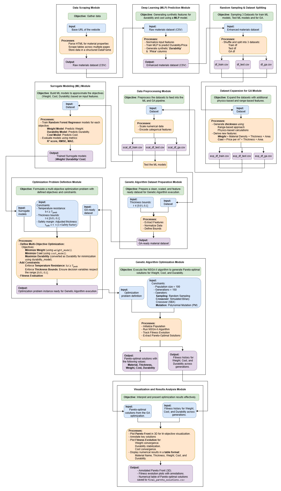

Spacecraft Thermal Protection System Optimization
A multi-objective genetic algorithm (NSGA-II) implementation to optimize a spacecraft Thermal Protection System (TPS) by balancing weight, durability, and cost. Trade-offs are visualized using the Pareto front to support engineering decision-making.
{kind=link}
{kind=link}
{kind=link}
Problem
Thermal Protection Systems must survive extreme re-entry conditions, but improving durability often increases weight and cost. Engineers need a principled way to explore trade-offs and pick an optimal design for a given mission.
Optimization objectives
- Minimize weight to improve fuel efficiency and reduce mission cost.
- Maximize durability to withstand extreme heat across re-entry cycles.
- Minimize cost while maintaining TPS performance.
System Architecture
{kind=link}
Approach (NSGA-II)
- Encoded TPS design candidates as individuals in a genetic population.
- Used non-dominated sorting to maintain a diverse Pareto-optimal set.
- Applied crossover + mutation to explore the design space.
- Visualized trade-offs using the Pareto front for decision support.
Results
Instead of returning a single answer, NSGA-II produces a set of best trade-off designs so stakeholders can select a solution that matches mission constraints (budget vs weight vs durability).
What I built
- End-to-end NSGA-II optimization pipeline in Python.
- Multi-objective fitness evaluation for weight, durability, and cost.
- Pareto front visualization for decision-making and reporting.
- Reproducible scripts + outputs to rerun experiments and compare solutions.
Quick Facts
- Category: Optimization / Genetic Algorithms
- Algorithm: NSGA-II (Multi-Objective GA)
- Objectives: Weight ↓, Cost ↓, Durability ↑
- Key Output: Pareto Front (trade-off solutions)
- Result: 25% weight reduction (with trade-offs)
- Tech: Python